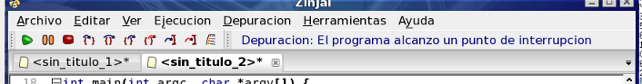

En este ejemplo, podemos continuar la ejecución de dos formas básicas. Una es avanzando un solo paso (una línea en el código); la otra es avanzando hasta el próximo punto de interrupción.
- Para avanzar paso por paso, utilice la tecla F7 (step over en el menú Depuración). Cada vez que presione F7 el programa ejecuta una línea de código.
- Para continuar ejecutando normalmente presione F5. Esta acción retomará la ejecución continua hasta que el programa alcance otro punto de interrupción. Si el programa no alcanzase nunca otro punto de interrupción se ejecutará hasta finalizar. En este caso, la consola de ejecución se cerrará automáticamente sin esperar a que presione una tecla.
Pruebe continuar la ejecución paso por paso y observe como varían las variables (recuerde que al llegar al paso que contiene el cin deberá volver a la consola de ejecución para ingresar un valor).
Observer que en todo momento, la parte derecha de la barra de herramientas le informa en letras azules el estado de la ejecución.

Volver... Continuar...